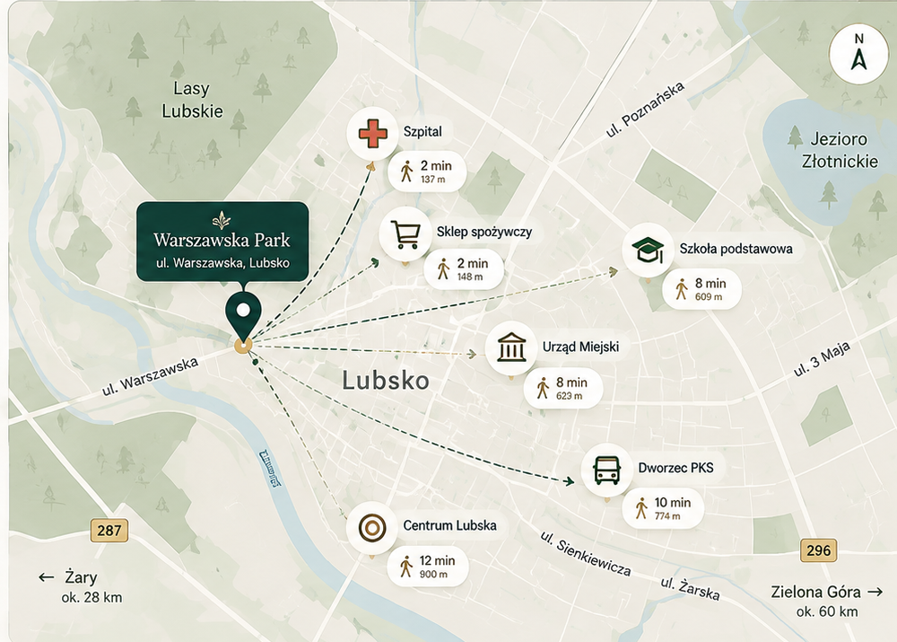

Warszawska Park powstaje przy ul. Warszawskiej w Lubsku —blisko codziennych usług, a jednocześnie w spokojnym,zielonym otoczeniu.
i Odległości orientacyjne. Rzeczywisty czas dojścia może się nieznacznie różnić.
